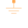
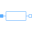
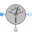
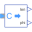
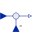

LinearInductorLinear inductor with ferromagnetic core |
|
Diagram
{kind=link}
Information
This information is part of the Modelica Standard Library maintained by the Modelica Association.
This model compares a transient-linear magnetic circuit with a quasi static magnetic circuit. A sinusoidal voltage is applied to an inductor with a closed ferromagnetic core of rectangular shape.
Compare the following quantities
- Sinusoidal supply voltage
source.v | sourceQS.v.re|im - Non-linear transient current due to saturation and equivalent quasi static current
currentSensor.i | currentSensorQS.i.re|im - Difference between RMS fundamental wave of transient current and the RMS quasi static current
feedback.y - Relative permeability of iron core of transient and quasi static circuit
r_mFe.mu_rConst | r_mFeQS.mu_rConst
Outputs (1)
| deviation |
Default Value: feedback.y Type: Current (A) Description: Deviation of transient and quasi static current |
|---|
Components (21)
|  | ground_mQS |
Type: Ground |
|---|---|---|
| sourceQS |
Type: VoltageSource Description: Voltage applied to inductor |
|
|  | rQS |
Type: Resistor Description: Inductor coil resistance |
| coilQS |
Type: ElectroMagneticConverter Description: Inductor coil |
|
| r_mLeakQS |
Type: ConstantReluctance Description: Constant leakage reluctance |
|
| r_mAirParQS |
Type: GenericFluxTube Description: Reluctance of small parasitic air gap (ferromagnetic core packeted from single sheets) |
|
| r_mFeQS |
Type: GenericFluxTube Description: Reluctance of ferromagnetic inductor core |
|
| groundQS |
Type: Ground |
|
| ground_m |
Type: Ground |
|
| source |
Type: SineVoltage Description: Voltage applied to inductor |
|
| r |
Type: Resistor Description: Inductor coil resistance |
|
| coil |
Type: ElectroMagneticConverter Description: Inductor coil |
|
| r_mLeak |
Type: ConstantReluctance Description: Constant leakage reluctance |
|
| r_mAirPar |
Type: GenericFluxTube Description: Reluctance of small parasitic air gap (ferromagnetic core packeted from single sheets) |
|
| r_mFe |
Type: GenericFluxTube Description: Reluctance of ferromagnetic inductor core |
|
| ground |
Type: Ground |
|
|  | currentSensorQS |
Type: CurrentSensor |
|  | complexToPolar |
Type: ComplexToPolar |
| currentSensor |
Type: CurrentSensor |
|
|  | feedback |
Type: Feedback |
| rootMeanSquare |
Type: RootMeanSquare |